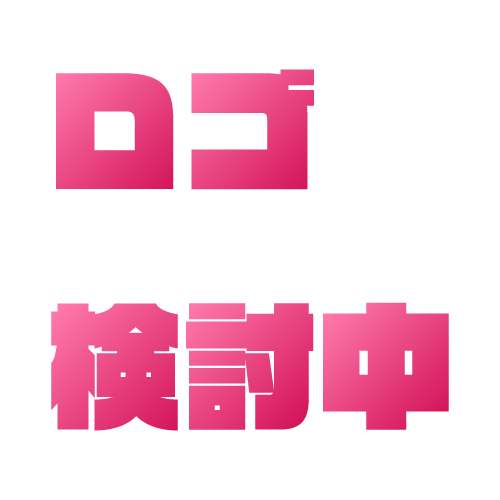

研究タイトル研究タイトル

安井研究室 小松崎隆人
研究内容研究内容研あたりまえが変わり続ける時代の中でこたえのない問に向けて、ゆれ動き、歩きさまよう。かたちなく漂うものを、操って集めて、形にする。情報をデザインする。わたしたちは「浮遊」しながら、 わたしたちは「浮」を「遊」んでいく。 研究内容研究内容研あたりまえが変わり続ける時代の中でこたえのない問に向けて、ゆれ動き、歩きさまよう。かたちなく漂うものを、操って集めて、形にする。情報をデザインする。わたしたちは「浮遊」しながら、 わたしたちは「浮」を「遊」んでいく。研究内容研究内容研あたりまえが変わり続ける時代の中でこたえのない問に向けて、ゆれ動き、歩きさまよう。かたちなく漂うものを、操って集めて、形にする。情報をデザインする。わたしたちは「浮遊」しながら、 わたしたちは「浮」を「遊」んでいく。研究内容研究内容研あたりまえが変わり続ける時代の中でこたえのない問に向けて、ゆれ動き、歩きさまよう。かたちなく漂うものを、操って集めて、形にする。情報をデザインする。わたしたちは「浮遊」しながら、 わたしたちは「浮」を「遊」んでいく。